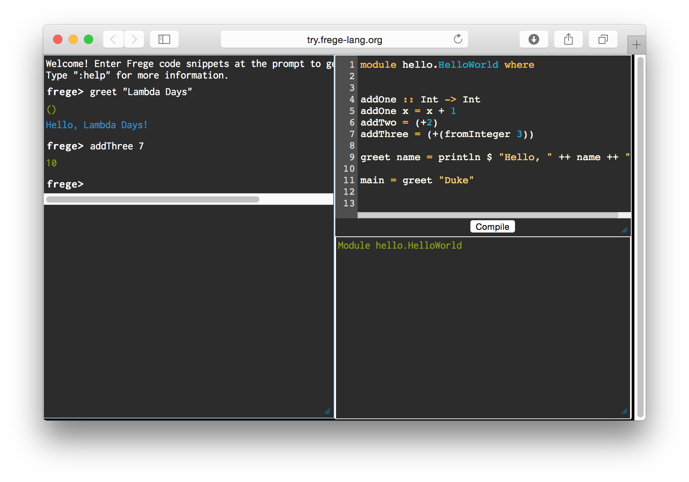
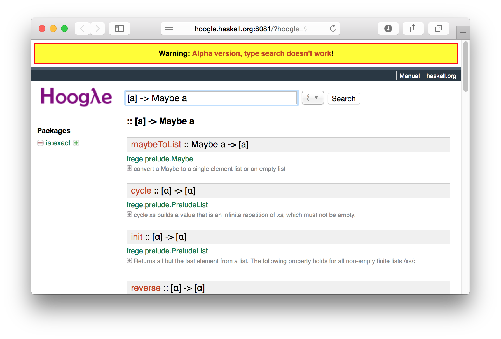

class: center, middle ## Getting started with Frege ### Lambda Days 2016 <img src="Frege_logo.png" width="300"> .footnote[Lech Głowiak] ??? My background: * Scala developer for few months (after CFP in fact) * Haskell during higher education only (until LambdaDays) * Java developer for 6 years, but I used `lambdaj` back in 2011, got little sick of complication level (not related to essential complexity) * Erlang - worked fine but I lacked compiler help, and `dialyzer` isn't good enough * Frege looked like a language for me Purpose: * introduce language itself - features * show how to develop first applications mixing Java and Frege - JSONLINT * show some tools and links --- class: center, middle ## Frege Programming Language ###JVM language in spirit of Haskell  ###Haskell for the JVM .footnote[https://github.com/Frege/frege] ??? In spirit -> Haskell for the JVM - direction changed a bit Talk is introductory - more details on JVM interoperability only 5mins --- class: middle, center #Gottlob Frege  ### 1848 - 1925 ??? Philosopher, logician, mathematician Functions that take functions as arguments back in the 19th century. 6mins --- ### Features * Purely functional * Higher order functions * Non-strict evaluation (default) * Immutable values * Algebraic data types * Strongly, statically typed * Type inference * Terse syntax * .red[_Runs on JVM_] * .red[_Interoperablity with JVM languages_] ??? JVM interop is not as easy as in Clojure because of compiler watching out types. Show `basics.hs` **AFTER** presenting REPL 8mins --- ### Distribution Prerequisites: JDK 7 or 8 Releases: https://github.com/Frege/frege/releases or [Maven](http://mvnrepository.com)/[Sonatype](https://search.maven.org) Make aliases in environments and you are set up for command line work! ```bash alias frege='java -Xss1m -cp build:$FREGE_HOME/fregec.jar' alias fregec='java -Xss1m -jar $FREGE_HOME/fregec.jar -d build' ``` .footnote[.center[[Wiki: Getting started](https://github.com/Frege/frege/wiki/Getting-Started)]] ??? * Download `.jar` to `FREGE_HOME` * Setup aliases * remember to have `build` folder where you compile --- ### Read Evaluate Process Loop #### Download and run ```bash wget https://github.com/Frege/frege-repl/releases/\ download/1.4-SNAPSHOT/frege-repl-1.4-SNAPSHOT.zip && unzip frege-repl-1.4-SNAPSHOT.zip && ./frege-repl-1.4-SNAPSHOT/bin/frege-repl ``` #### Build your own ```bash git clone https://github.com/Frege/frege-repl && cd frege-repl && ./gradlew ``` ??? ```haskell addOne :: Int -> Int addOne x = x + 1 addTwo = (+2) addThree = (+(fromInteger 3)) ``` ```haskell greet name = println $ "Hello, " ++ name ++ "!" ``` :t greet :help JArray :java ###.red[Show basics!] 15 mins --- ### Online REPL There is at least one online REPL: http://try.frege-lang.org .center[] ??? The 1st law of presentations: do not assume Internet connection, but try! --- ### Froogle / Hoogle for Frege Froogle: http://froogle.mmhelloworld.com Hoogle 5 for Frege: http://hoogle.haskell.org:8081 .center[] ??? 20 mins --- ### Parsing JSON - first attempt Using build-in JSON module ```haskell import Data.JSON -- Parsing to JSON AST is enough for validation parseToValue :: String -> Either String JSON.Value parseToValue = parseJSON type Validate = String -> Either String String validateJson :: Validate validateJson a = case (parseToValue a) of Left err -> Left err Right v -> Right (show v) ``` ??? Built-in standard Frege Based on micro-parsec Micro-parsec is also built-in `parseToValue` reifies return type `validateJson` type annotation is optional `validateJson` could be implemented with `do notation`, `either`, `>>=` ... --- ### Second attempt: using 3rd party JVM library Wrappers can simplify `native` declarations ```java private static ObjectMapper m = new ObjectMapper(); private static ObjectReader r = m.reader(); public static JsonNode parse(String s) throws IllegalArgumentException{ try { return r.readTree(s); }catch(JsonProcessingException e){ throw new IllegalArgumentException(e.getMessage()); }catch(Exception e){ throw new IllegalArgumentException(e.toString()); } } ``` --- ### Second attempt: using 3rd party JVM library ```haskell data JacksonJsonNode = native com.fasterxml.jackson.databind.JsonNode where pure native toString :: JacksonJsonNode -> String pure native getMessage :: IllegalArgumentException -> String data JacksonWrapper = native com.github.LGLO.JacksonWrapper where pure native parse com.github.LGLO.JacksonWrapper.parse :: String -> (IllegalArgumentException | JacksonJsonNode) validateJson :: String -> Either String String validateJson a = case (JacksonWrapper.parse a) of Left err -> Left (err.getMessage) Right j -> Right j.toString ``` ??? One option is to write thin wrapper layer in Java to help yourself with later 'native' declarations. This is the last command line example. BTW: all examples should compile. --- ### Native declarations #### `pure native` for immutable objects only ```haskell data Rational = native immutable.Rational where -- static pure native new :: Long -> Long -> Rational pure native integer immutable.Rational.integer :: Long -> Rational -- instance pure native toString :: Rational -> String pure native add :: Rational -> Rational -> Rational pure native div :: Rational -> Rational -> (IllegalArgumentException | Rational) pure native divNull :: Rational -> Rational -> Maybe Rational -- ``` * native functions are strict on all arguments * native functions type must not have type class constraints ??? `data Rational` establishes namespace for functions `integer` is static function in `immutable.Rational` `divNull` is a pure method (not regarding state) that can return `null` For `div` compiler generates Java code that catches exception and returns `Left IllegalArgumentException` or `Right Rational` show: native/frege/src/main/frege/rational.fr Show that there is no code generated in Rational.java --- ### Native declarations #### `native` for mutable objects ```haskell -- AB is envelope for final int 'a' and non final int 'b' data AB = native mutable.AB where native new :: Int -> Int -> ST s (Mutable s AB) pure native a getA :: AB -> Int native getB :: Mutable s AB -> ST s Int native setB :: Mutable s AB -> Int -> ST s () -- ``` `Mutable` cannot be instantiated by nor passed to `pure` function - it is compiler defense. ```haskell readonly :: (m -> b) -> Mutable s m -> ST s b freeze :: Freezable f => Mutable s m -> ST s m thaw :: Freezable f => m -> ST s (Mutable s m) ``` ??? `Mutable` is wrapper needed for JVM mutable object (Frege objects are immutable of course) `Mutable` can be used only with other native functions and cannot escape ST or IO monads. `Freezable` is type class for mutable values that support making read-only copies. To be implemented with care. `readonly` Apply a pure function to a mutable value that pretends to be read-only. The function must not rely on anything that could change in the mutable data! `readonly id` - for very brave! --- ### Native declarations #### `mutable native`: does not allow `STMutable s A` return restricts return type to `ST RealWorld`, that is `IO` don't have to type `Mutable RealWorld` everywhere ```haskell data TT = mutable native io.TelephoneTime where native new :: () -> IO TT -- IO = ST RealWorld native printTime :: TT -> IO () data TT2 = native io.TelephoneTime where native new :: () -> STMutable RealWorld TT2 native printTime :: Mutable RealWorld TT2 -> IO () ``` ??? --- ### native-gen-tool * Tool that helps writing `native` declarations * Rather to be run once, not every build * Workflow: - Edit 'types.properties' to mark classes as `pure`, `st` or `io` - Run `frege.nativegen.Main` with appropriate options - Cut interesting parts from generated source and work on it: * Wrap return type in `Maybe` or `Either` for nulls and exceptions * Fix some other return type issues * Mark pure methods as `pure` * Delete what doesn't compiles and is not essential ;) ```java //types.properties java.math.BigInteger=pure,Integer java.nio.ByteBuffer=st java.nio.channels.FileChannel=io ``` .footnote[.center[https://github.com/Frege/frege-native-gen]] ??? see: jackson-native-gen/notes 32 minutes --- ### Webservice #1 - Java calls Frege Java `main` runs **SparkJava**. **SparkJava** handlers call **Frege** code. ```java private static Route validateHandler = (req, res) -> { String body = req.body(); //For Frege types it is safe to assume result is lazy*. TEither result = Delayed.<TEither>forced(validateJson(body)); //It is safe to always pass strict arguments*. res.status(statusCode(result)); return output(result); }; ``` In **Frege 3.23** there is runtime type check for instance of `Delayed`. ```haskell validateJson :: String -> Either String String validateJson a = case (parseToValue a) of Left err -> Left err Right v -> Right (show v) statusCode :: Either String String -> Int statusCode = either (const 400) (const 200) output :: Either String String -> String output = either id id ``` .footnote[.center[SparkJava: http://sparkjava.com]] ??? Show `App.java` and `JsonLint.fr` Run `./valid.sh` and `./invalid.sh` --- ### Webservice #2 - Frege only* solution *Chinook* for web *Sirocco* for DB ```haskell module jsonlint.App where import chinook.Chinook (get) import jsonlint.DB import jsonlint.Handlers (validateHandler) main _ = do DB.createRequestsTable --get :: String -> (IO Request -> IO Response) -> IO () get "/validate" validateHandler get "/" validateHandler ``` .footnote[.center[ https://github.com/januslynd/chinook https://github.com/januslynd/sirocco ]] --- ### Webservice #2 - Frege only* solution ##### *Chinook* - *JavaSpark* in **Frege** ```haskell validateHandler :: IO Request -> IO Response validateHandler req = do body <- req.body validate body validate :: Maybe String -> IO Response validate Nothing = missingBody validate (Just "") = missingBody validate (Just body) = let result = validateJson body in do _ <- DB.logRequest body (isValid result) return (toResponse result) missingBody = IO.return (mkResponse 400 "There is no BODY.") toResponse = either (mkResponse 400) (mkResponse 200) mkResponse status output = response.{ status = status, output = Just output } ``` --- ### Webservice #2 - Frege only* solution ##### *Sirocco* DB access ```haskell connection :: IO Connection connection = createConnection databaseURI "sa" "" logRequest :: String -> Bool -> IO Int logRequest text valid = let sql = Just "INSERT INTO requests (input, valid) values (?, ?)" params = [toParam (Just text), toParam (Just valid)] in do update connection sql params createRequestsTable :: IO () createRequestsTable = do stmt <- execute connection (Just "DROP TABLE requests") --execute :: IO Connection -> Maybe String -> IO Bool stmt <- execute connection (Just createTableSQL) println $ "Table 'requests' created: " ++ (show stmt) ``` --- ### Gradle https://github.com/Frege/frege-gradle-plugin - Compiles Java before Frege by default - Use sub-projects if you need to call Frege code from Java - `-x test` if you have no QuickCheck test ### sbt https://github.com/earldouglas/sbt-frege - Compiles Frege first by default - Use sub-projects if you need to use native declarations ### Leiningen https://github.com/Frege/frege-lein-plugin - Compiles Java before Frege - Use [frege-lein-template](https://github.com/Frege/frege-lein-template) for quick start -TODO: repeat when clojars.org is up ??? Generally it is good idea to make sub-project (sub-modules) for each language and maybe layers. TODO: commands to quickly show files with configuration --- ##Eclipse plugin https://github.com/Frege/eclipse-plugin Rumor says it's great, especially when you hack on Frege itself. #### Intellij IDEA misses good quality plugin But you can upvote it on: https://youtrack.jetbrains.com/issue/IDEABKL-7108 --- class: middle, center ##Questions??? --- class: middle, center # Lech Głowiak <img src="scalac.png"> <h2><img src="github.png" width="48">@LGLO</h2> <h2><img src="twitter.png" width="48">@LechGlowiak</h2> --- class: middle, center ##Thank you! I kindly ask for **frank** feedback! .footnote[All presented code is available at [https://github.com/LGLO/LamdaDays2016]] ??? Code works with the latest versions of Frege, plugins, libraries as of February 2016 That ends my first presentation - your feedback is important to (possible) future listeners.